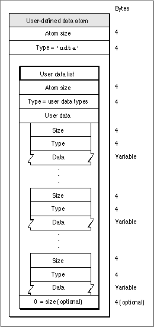

User-Defined Data Atoms
Many movie, track, and media atoms contain atoms that store user-defined data. Your application may store data in these user-defined data atoms.Figure 4-12 shows the layout of a user-defined data atom.
Figure 4-12 The layout of a user-defined data atom

You define a user-defined data atom by specifying these elements:
The following user data types are currently defined:
- Size. The number of bytes in the data element.
- Type. The type of the data in the data element (defined by the
'udta'atom type).- User data list. The movie user data atom contains a user data list that is itself formatted like a series of atoms. Each data element in the private data portion of the user-defined data atom contains size and type information along with the data. Furthermore, the list of atoms is optionally terminated by a 0.